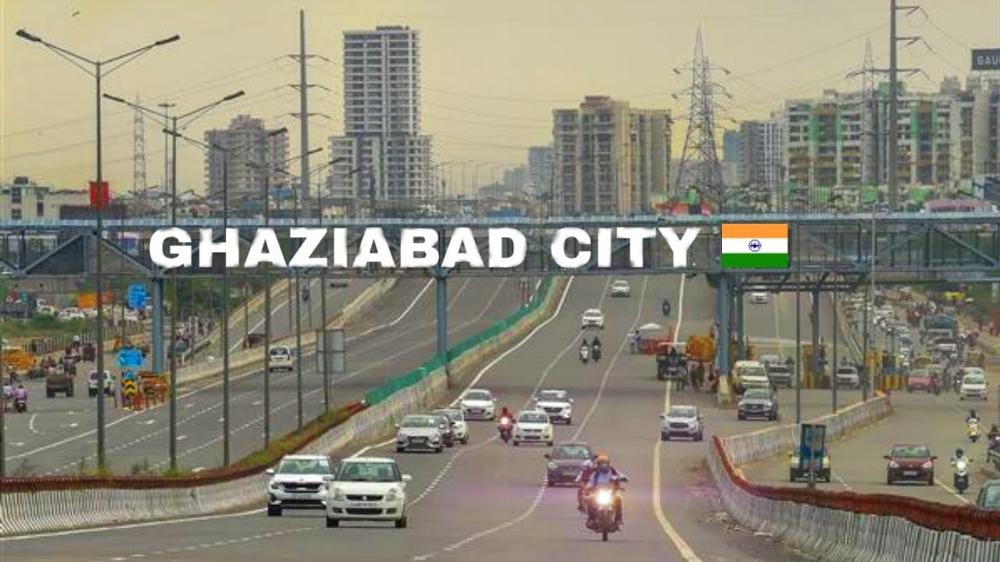

Name:Rhythm Dhingra
MCA 1st year Section-B
About Myself
I am Rhythm Dhingra. I have completed my schooling from Dehradun Public School Ghaziabad. I have completed my graduation in bachelors of computer applications from Guru Gobind Singh Indraprastha University Delhi and currently I am pursuing MCA from KIET Group Of Institutions.I lived in ghaziabad.
My hobbies are playing cricket,badminton and reading books.I have many strengths like effective time management,punctual,honest.
Go to Top
About My City

Ghaziabad:- Ghaziabad is a city in the Indian state of Uttar Pradesh and a part of Delhi NCR.It is the administrative headquarters of Ghaziabad district and is the largest city in western Uttar Pradesh, with a population of 1,729,000.
Ghaziabad Municipal Corporation is divided into 5 zones - City Zone, Kavi Nagar Zone, Vijay Nagar Zone, Mohan Nagar Zone and Vasundhara Zone.
The Municipal Corporation comprises 100 wards.Well connected by roads and railways, it is a major rail junction for North India.
It is sometimes referred to as the "Saya of Uttar Pradesh" because it is close to New Delhi, on the main route into Uttar Pradesh.Recent construction works have led to the city being described by a City Mayors
Foundation survey as the second fastest-growing in the world.Situated in the Upper Gangetic Plains, the city has two major divisions separated by the Hindon River, namely Trans-Hindon on the west and Cis-Hindon on the east.Ghaziabad, along with Meerut and Bulandshahr, remained one of the three Munsifis of the District, under the Meerut Civil Judgeship during most periods of the British Raj
Ghaziabad was associated with the Indian independence movement from the Indian Rebellion of 1857.
Go to Top
About My Motive
I want to become a software developer and I want to work as a software developer from multi-national companies in future that's why I was joining the course of MCA.
Go to Top